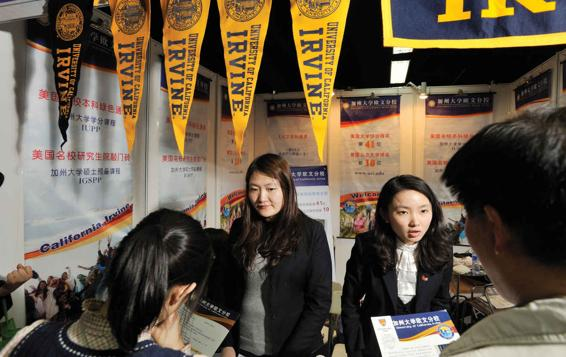

How many international students are enrolled in your sociology course? How many international students attend your university? In 1943, approximately 8,000 foreign students were enrolled in American colleges and universities. In the 2015–2016 academic year, the number of international students surpassed 1 million for the first time, representing 5 percent of the total student population at U.S. colleges and universities (Institute of International Education [IIE], 2016). Most foreign students today come from Asia; China, India, South Korea, Vietnam, Taiwan, and Japan all send sizeable contingents of students abroad. However, in 2015–2016, Saudi Arabia became the third-largest sender of international students to the United States (after China and India). The United States takes in more foreign students than any other country: New York University and the University of Southern California are the top two destinations. What do foreign students in the United States study? About half in 2018–2019 pursued STEM fields. More than one-fifth study engineering, 16.6 percent study business and management, 18.5 percent concentrate on math and computer sciences, and 7.6 percent study the social sciences (IIE, 2019a).
Some scholars regard the exchange of international students as a vital component of globalization. Foreign students, in addition to serving as global “carriers” of specialized technical and scientific knowledge, play an important cultural role in the globalizing process. Cross-national understandings are enhanced, and xenophobic and isolationist attitudes are minimized as native students in host countries develop social ties to their foreign classmates and as foreign students return to their countries of origin with an appreciation for the cultural mores of the nation in which they have studied.
Chinese students explore their options at the China International Exhibition Tour college fair. In the 2018–2019 academic year, China accounted for 34 percent of all international students in the United States (IEE, 2019b).
Yet there is considerable debate in the United States about what is sometimes called the “internationalization of education.” On most college and university campuses, it is not hard to find disgruntled students who complain that the influx of foreign students deprives deserving Americans of educational opportunities—especially given the increasingly competitive nature of the U.S. higher education system. Moreover, although more than two-thirds of foreign students receive nothing in the way of scholarships, some top-notch foreign students are given financial inducements to attend American schools. The outcry against this practice has been loudest at public universities, which receive support from tax revenues. Critics charge that U.S. taxpayers should not shoulder the financial burden of educating foreign students whose families have not paid U.S. taxes and who are likely to return home after earning their degrees.
Supporters of international education find such arguments unconvincing. Some Americans may lose out to foreign students in the competition for slots at prestigious universities, but this is a small price to pay for the economic, political, and cultural benefits the United States receives from having educated millions of foreign business executives, policy makers, scientists, and professionals over the years—many of whom became sympathetically disposed to the United States as a result of their experiences here. And although some foreign students receive scholarships from American universities, most are supported by their parents. In fact, it is estimated that foreign students pump billions of dollars each year into the U.S. economy—more than $41 billion in 2018–2019, including tuition, housing, and related purchases (NAFSA, 2019a). Rather than curtail the number of foreign students admitted to American universities, supporters of international education suggest that even more should be done to encourage the exchange of students.
On the one hand, greater effort should be made to recruit foreign students, help them select the university and program that will best meet their needs, and provide them with a positive social and educational experience while they are in the United States. On the other hand, more Americans should be encouraged to study abroad. American students are notorious for having poor or no foreign-language skills and for knowing little about global geography, much less about the cultures of other nations. This cultural and linguistic ignorance puts the United States at a disadvantage relative to other countries as the world becomes increasingly globalized; encouraging Americans to study overseas may be the best way to inculcate a global worldview.
Should there be a greater focus on international education in American colleges and universities? Should the international exchange of students be expanded? These are among the issues that educational institutions are forced to confront in the context of globalization. Still, more and more U.S. students are studying abroad—more than 332,727 U.S. students studied abroad for credit during the 2017–2018 academic year. While this figure represents an increase of nearly 2.7 percent over the year before, still only about 10 percent of college students study abroad (NAFSA, 2019b). Of those who do study abroad, more than half (53 percent as of 2017–2018) study in Europe, with about one-third studying in the United Kingdom, Italy, or Spain (IIE, 2016). There is a gender gap in who studies abroad, with women accounting for two-thirds of American students studying abroad. Most scholars agree that in our increasingly global society, international education is essential to having a well-informed, open-minded, and forward-looking population.
CONCEPT CHECKS
Explain the relationship between race and intelligence. Do you find the evidence compelling?
What are three reasons parents decide to homeschool their children?
Describe several characteristics of the “typical” international student enrolled at a U.S. college or university.